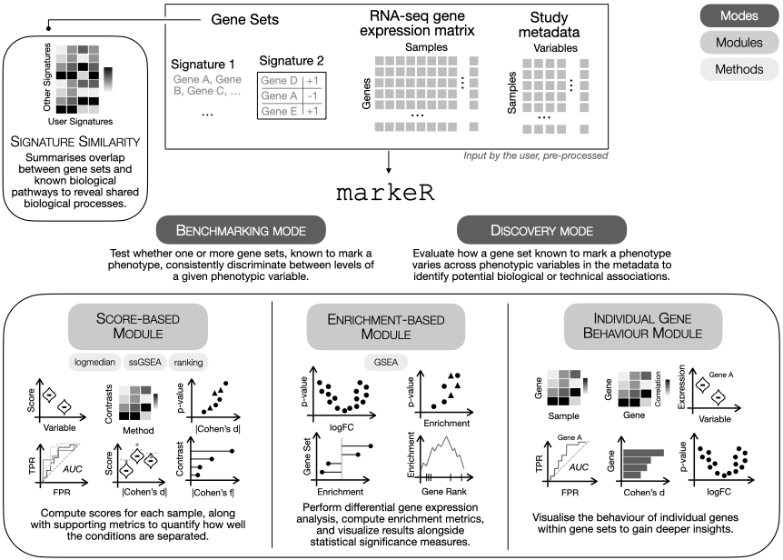

markeR is an R package that provides a modular and extensible framework for the systematic evaluation of gene sets as phenotypic markers using transcriptomic data. The package is designed to support both quantitative analyses and visual exploration of gene set behaviour across experimental and clinical phenotypes.
To cite
markeRplease use:Martins-Silva R, Kaizeler A, Barbosa-Morais NL (2025). markeR: An R Toolkit for Evaluating Gene Signatures as Phenotypic Markers. doi:10.18129/B9.bioc.markeR, R package version 1.1.2, https://bioconductor.org/packages/markeR.
The folder inst/Paper/ is in the paper branch and contains all scripts and materials used in the original markeR paper to reproduce analyses and figures. You can browse it here.

Table of Contents
Installation
Install the latest release from Bioconductor:
# Install from Bioconductor
if (!requireNamespace("BiocManager", quietly = TRUE))
install.packages("BiocManager")
BiocManager::install("markeR")
library(markeR)Or install the latest development release of markeR from GitHub with:
# install.packages("devtools")
devtools::install_github("DiseaseTranscriptomicsLab/markeR@*release")Requirements
This package is officially supported on R > 4.5.0. ⚠️ Older versions of R may work, but are not officially supported due to upstream dependency constraints. In some cases, installing older versions of dependencies (e.g., via renv, CRAN snapshots, or checkpoint) can restore compatibility.
Common Workflow
1. Input Requirements
Depending on the analysis mode, inputs vary slightly.
-
Gene Set(s):
A named list where each element represents one gene set:- Use a character vector for gene sets where direction of enrichment is not known.
- Use a data frame with gene names and a directionality column (
-1for down-regulated,+1for up-regulated)
This structure supports both Discovery Mode (single gene set) and Benchmarking Mode (multiple gene sets).
# Example
gene_sets
#> $Set1
#> [1] "GeneA" "GeneB" "GeneC" "GeneD"
#>
#> $Set2
#> gene direction
#> 1 GeneX 1
#> 2 GeneY -1
#> 3 GeneZ 1-
Expression Data Frame:
A filtered and normalised, non log-transformed, gene expression matrix (genes × samples). Row names must be gene identifiers; column names must match sample IDs in the metadata.Warning: If you are using microarray data or outputs from common RNA-seq pipelines (e.g., edgeR), note that the expression values may already be log2-normalised. The input to
markeRmust necessarily be non-log-transformed. If your data are log2-transformed, you can revert them by applying2^data.
head(expr_df)
#> Sample1 Sample2 Sample3 Sample4 Sample5
#> GeneA 3.879049 7.448164 2.864353 5.852928 3.610586
#> GeneB 4.539645 5.719628 4.564050 4.409857 4.584165
#> GeneC 8.117417 5.801543 2.947991 6.790251 2.469207
#> GeneD 5.141017 5.221365 3.542218 6.756267 9.337912
#> GeneX 5.258575 3.888318 3.749921 6.643162 7.415924
#> GeneY 8.430130 8.573826 1.626613 6.377281 2.753783-
Sample Metadata:
A data frame with samples as rows and annotations as columns. The first column should contain sample IDs matching the expression matrix column names.
metadata
#> SampleID Condition Age
#> 1 Sample1 Control 49
#> 2 Sample2 Treatment 44
#> 3 Sample3 Control 46
#> 4 Sample4 Treatment 49
#> 5 Sample5 Control 382. Select Mode of Analysis
markeR provides two modes of operation:
Benchmarking: evaluates gene sets’ performance in marking a metadata variable, i.e., a phenotype, returning comparative visualisations across scoring and enrichment methods.
Discovery: examines the relationship between a gene set and one or more variables of interest, suitable for exploratory or hypothesis-generating analyses.
3. Choose a Quantification Approach
Two complementary strategies are implemented for quantifying associations between gene sets and phenotypes:
3.1 Score-Based Approach
A score summarising the collective expression of a gene set therein is assigned to each sample. Scores can be visualised using built-in functions, or used directly in downstream analyses (e.g., comparisons between phenotypic groups of samples, correlations with numerical phenotypes).
Available methods:
Log2-median: mean of the across-sample normalised log2 median-centred expression levels of the genes in the set; for bidirectional gene sets, the sample score is the partial score for the subset of putatively upregulated genes minus that of the downregulated subset.
Ranking: mean expression rank of gene set members in each sample; for bidirectional gene sets, the sample score is the partial score for the subset of putatively upregulated genes minus that of the downregulated subset, and normalised by the number of genes in the set.
ssGSEA: single-sample gene set enrichment score using ssGSEA; for bidirectional gene sets, the sample score is the partial score for the subset of putatively upregulated genes minus that of the downregulated subset.
Gene sets that are robust phenotypic markers are expected to yield consistently high scores across methods.
3.2 Enrichment-Based Approach
Enrichment-based methods implement Gene Set Enrichment Analysis (GSEA). Genes are ranked according to differential expression statistics, and a Normalised Enrichment Score (NES) per variable of interest is computed, accompanied by a p-value adjusted for multiple hypothesis testing.
4. Visualisation and Evaluation
In Benchmarking Mode, markeR offers a range of visual summaries:
- Violin plots of score distributions by categorical phenotype;
- Scatter plots of association between scores and numerical phenotypes;
- Volcano plots and heatmaps of scores or differential gene set expression based on effect sizes (Cohen’s d or f);
- ROC curves and respective AUC values of gene sets’ phenotypic classification performance;
- Violin plots of effect size distributions (Cohen’s d) for pairwise group differences in scores, for original and simulated gene sets;
- Plots summarising NES alongside adjusted p-values (e.g., lollipop plots);
- GSEA plots showing running enrichment scores across ranked gene lists.
In Discovery Mode, the output focuses on a single gene set:
- Score distributions stratified by variable;
- Effect sizes for pairwise and multiple-group differences (Cohen’s d and f, respectively);
- Cross-variable summaries of NES and adjusted p-values (e.g., lollipop plots).
The Benchmarking Mode offers the most comprehensive set of features. Users are allowed to seamlessly move from Discovery to Benchmarking once a variable of interest has been identified and further testing is required. Benchmarking is designed to evaluate multiple gene sets simultaneously, whereas Discovery focuses on the performance of a single gene set.
5. Individual Gene Exploration
To better understand the contribution of individual genes within a gene set, and identify whether specific genes drive the set’s collective signal, markeR provides VisualiseIndividualGenes. Available options include:
- Expression heatmaps of genes across samples or groups of samples;
- Violin plots showing cross-sample expression distributions of individual genes;
- Heatmaps of pairwise cross-sample expression correlation between genes in the set;
- ROC curves and AUC values to evaluate single genes’ performance as phenotypic markers;
- Effect size estimation (Cohen’s d) of expression differences between groups of samples;
- Principal Component Analysis (PCA) of expression of genes in the set, to evaluate which genes dominate collective variance and how samples separate according to the gene set’s expression.
6. Compare with Reference Gene Sets
markeR also supports comparison of user-defined gene sets against reference collections (e.g., MSigDB). Two complementary similarity metrics are implemented:
Jaccard Index: the ratio of the number of genes in common over the total number of genes in the two sets.
Log Odds Ratio (logOR) from Fisher’s exact test of association between gene sets, given a specified gene universe.
Filters can be applied based on similarity thresholds (e.g., minimum Jaccard, OR, or Fisher’s test p-value).
Python Bridge
For users who prefer Python, a lightweight bridge is available in python/ that allows calling any markeR function from a Python environment via rpy2. It includes a tutorial workflow script and a generic command-line wrapper. See python/README.md for installation instructions and usage examples.
Contact
📩 For any questions or concerns, feel free to reach out:
Rita Martins-Silva
Email: rita.silva@medicina.ulisboa.pt